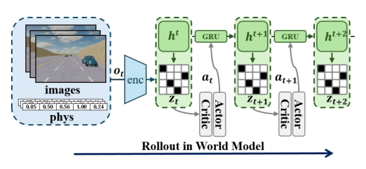
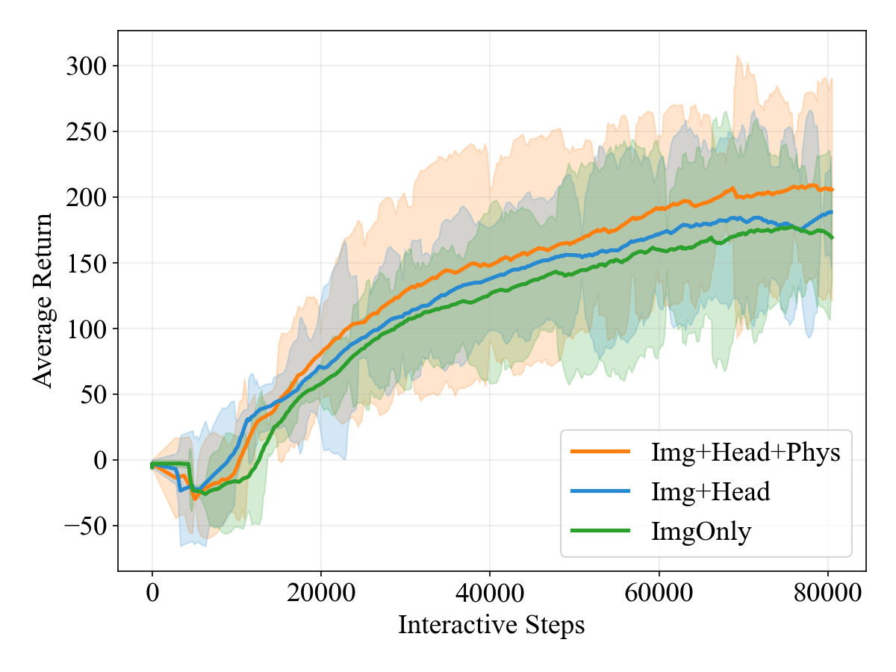
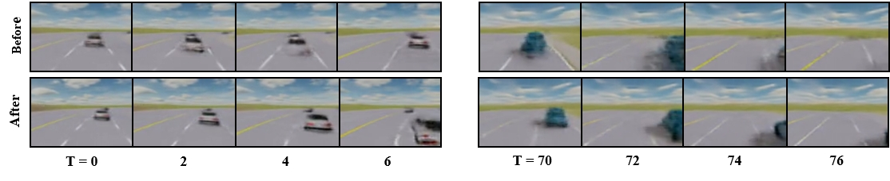

Kinematics-Aware：数据高效自动驾驶的潜在世界模型
简单摘要
尽管自动驾驶技术取得了快速进展，在长尾和安全关键场景中实现可靠决策仍是一个根本性挑战。强化学习（RL）为序列决策提供了原则性框架，但其在自动驾驶中的应用受限于数据效率——学习鲁棒驾驶策略通常需要海量环境交互，而大规模真实世界数据采集成本高昂且存在安全风险。高保真仿真器虽可降低安全风险，但计算开销巨大，往往需要数百万交互步才能收敛。世界模型（WM）通过学习环境动力学的紧凑潜在表征，使策略优化可在想象推演中进行，显著提升了样本效率，支持长程推理。现有驾驶世界模型工作主要集中在表征过滤或生成建模上，未显式约束潜在动力学保持几何一致和物理基础的结构，这对闭环车辆控制至关重要。本文基于循环状态空间模型（RSSM）提出任务相关世界模型框架，将视觉观测与车辆运动学状态融合构建以运动学为锚点的潜在表征，并通过辅助预测头施加结构化空间监督。
 图 1
图 1核心创新
1. 将低维车辆运动学状态显式融入观测编码器，使潜在转移以物理上有意义的运动动力学为锚点。
2. 引入结构化空间监督机制：通过预测车道相对几何和相邻车辆状态的辅助预测头，正则化RSSM潜在动力学。
3. 显式对齐潜在动力学与驾驶任务关键的空间和运动学结构，将世界模型从纯生成式抽象塑造为面向闭环车辆控制的任务相关表征。
4. 在结构化潜在空间中通过想象推演进行策略学习，实现数据高效且动力学一致的自动驾驶决策。
技术细节

架构图：方法整体流程技术总览，在现实世界的驾驶中，自我车辆无法获取完整且准确的环境状态，例如其他驾驶员的精确意图或封闭的道路区域。定义下一个状态的条件转移概率分布。是平衡进度、安全性和规则遵从性的奖励函数，而 是折扣因子。
2 预赛
2 预赛，在现实世界的驾驶中，自我车辆无法获取完整且准确的环境状态，例如其他驾驶员的精确意图或封闭的道路区域。定义下一个状态的条件转移概率分布。是平衡进度、安全性和规则遵从性的奖励函数，而 是折扣因子。
$$ \mathbf{o}_t = \{I_t, \mathbf{v}_t\}, $$
$$ \mathbb{E}_{\pi} [ \sum_{t=0}^{\infty} \gamma^t r_t ]. $$
放在“预赛”这一部分看，它重点在定义或约束 mathbb E pi [ sum t 这一项。这条式子描述了多个分量的聚合或逐步合成过程。它通常表示模型如何把局部贡献、概率权重或多项损失累积成最终结果。
3 运动学感知的潜在世界模型
本节详细介绍了我们提出的运动学感知世界模型，该模型集成了多模态编码、基于 RSSM 的动力学与特定于驾驶的监督。
1. 多模态编码
为了解决纯图像输入的局限性，我们提出了一种增强的输入表示，将图像特征与 5 维车辆物理信息融合。这些物理状态可以从机载传感器（例如 IMU、里程计）准确有效地获得，为从像素推断它们提供了可靠且低成本的替代方案。具体来说，图像编码器通过卷积神经网络（CNN）处理前置摄像头图像。
$$ e_t = \text{Concat}(f_{\text{img}}, f_{\text{phys}}) \in \mathbb{R}^{d_{\text{img}} + d_{\text{phys}}}. $$
2. 潜在动力学建模
然后将编码的观测值嵌入输入到循环状态空间模型（RSSM）中。在每个时间步，模型都会维护一个总结过去信息的确定性隐藏状态和一个捕获不确定性的随机状态。其中包括观测重建、奖励预测和终止信号预测的负对数似然。
$$ \begin{aligned} &h_t = f_\theta(h_{t-1}, z_{t-1}, a_{t-1}), \\ &\text{Prior: } \hat{z}_t \sim p_\theta(\hat{z}_t \mid h_t), \\ &\text{Posterior: } z_t \sim q_\theta(z_t \mid h_t, e_t), \end{aligned} $$
这组并列公式给出了世界模型的递推链路：先根据上一步隐状态、潜变量和动作更新当前隐状态，再在这个隐状态上预测潜变量、观测或奖励。它把环境演化压缩成可以逐步 rollout 的潜空间动力系统。
$$ \mathcal{L}_{\text{basic}} = \mathbb{E}_{q_\theta}[\sum_{t=1}^{T} (\mathcal{L}_{\text{pred},t} + \mathcal{L}_{\text{KL},t})], $$
放在“运动学感知的潜在世界模型”这一部分看，它重点在定义或约束 L basic 这一项。这条式子给出了训练阶段的优化目标。阅读时可以先看左侧到底在约束什么，再区分右侧每一项对应的是重建误差、正则项还是辅助监督。
3. 驾驶专用监控头
3.3 驾驶专用监控头，仅仅依靠像素重建往往会忽略结构化语义信息，无法保证长时域交互预测所需的几何一致性。我们通过添加两个特定于任务的检测头来扩展基本世界模型的输出头。这两个新头的梯度反向传播到世界模型，引导潜在状态明确关注关键驾驶场景信息。
$$ \hat{l}_t = f_{\text{lane}}(h_t,z_t) = [\hat{d}_{\text{left}}, \hat{d}_{\text{right}}, \hat{\Delta}_{\text{heading}}] \in \mathbb{R}^{3}, $$
这条式子给出了渲染/成像算子的整体输入输出：模型把相机参数与场景表示一起送入渲染器，得到最终图像或投影结果。它相当于把整条前向生成链路压缩成一个明确的计算接口。
$$ \hat{n}_t = f_{\text{nbr}}(h_t,z_t) \in \mathbb{R}^{12}, $$
放在“运动学感知的潜在世界模型”这一部分看，它重点在定义或约束 n t 这一项。这条式子给出了渲染/成像算子的整体输入输出：模型把相机参数与场景表示一起送入渲染器，得到最终图像或投影结果。它相当于把整条前向生成链路压缩成一个明确的计算接口。
$$ \mathcal{L}_{\text{total}} = \mathcal{L}_{\text{basic}} + \mathcal{L}_{\text{lane}} + \mathcal{L}_{\text{nbr}}. $$
放在“运动学感知的潜在世界模型”这一部分看，它重点在定义或约束 L total 这一项。这条式子是在定义一个可直接计算的中间量：右侧把相对位置、方向、权重或比例关系组合起来，左侧则把这个组合结果记成后续模块要反复使用的变量。
4. 演员-评论家学习
3.4 演员-评论家学习， 直观上，-return 考虑有限长度想象轨迹内的累积奖励，同时在端点处使用来近似无限远的未来回报，从而为每个状态提供全局价值估计。
接着，论文还会处理 参与者损失被定义为负预期优势，由折扣和持续概率的累积乘积加权。它的作用不是重复上一层计算，而是把这一阶段得到的结果继续传给后面
$$ \mathcal{L}_{\text{critic}} = \mathbb{E}_{\tau^{\text{imag}}} [ \sum_{\tau=t}^{t+H-1} \frac{1}{2} ( V(\phi_\tau) - R_\tau^\lambda )^2 ], $$
放在“运动学感知的潜在世界模型”这一部分看，它重点在定义或约束 L critic 这一项。这条式子给出了训练阶段的优化目标。阅读时可以先看左侧到底在约束什么，再区分右侧每一项对应的是重建误差、正则项还是辅助监督。
$$ R_\tau^\lambda = r_\tau + \gamma [ (1-\lambda) v_\psi(s_{\tau+1}) + \lambda R_{\tau+1}^\lambda ], $$
5. 奖励设计
3.5 奖励设计，我们的驾驶任务中的奖励函数由四个部分组成，平衡进度、安全性和规则合规性。前进距离奖励鼓励沿着车道中心线取得进展。速度奖励鼓励保持适当的速度。
实验结论
本节详细介绍了我们的实验设置、模型配置、对比实验、消融研究和相关结果分析。为了证明样本效率，我们将我们的框架与标准无模型基线进行比较。我们的消融研究比较了四种模型变体。
4.1 实验装置
我们的实验是在MetaDrive自动驾驶模拟环境中进行的。我们选择的地图具有多车道道路、中等交通密度以及直线和曲线路段的混合，确保任务具有足够的挑战性，同时保持易于处理。
4.2 型号配置
CNN 编码器和解码器采用深度 32、内核大小 4、最小分辨率 4 和 SiLU 激活。MLP 由 2 层（256 个单元）、SiLU 激活和层归一化组成。RSSM 使用确定性状态大小 512、随机状态大小 和循环深度 1。
4.3 对比实验
为了证明样本效率，我们将我们的框架与标准无模型基线进行比较。PPO 使用相同规模的相同观测数据、编码器和 Actor Critic 架构，以及相同的 Metadr

4.4 消融研究
我们进行了一系列的消融实验，结果如图和表所示。我ys（橙色）进一步纳入车辆物理作为输入
| Heads | Metrics | — | ||||
|---|---|---|---|---|---|---|
| Image | Phys | Decoder | Rwd/Cont | Lane/Neigh | MR | SR |
| — | — | — | — | — | 176.5 | 0.17 |
| — | — | — | — | — | 193.6 | 0.33 |
| — | — | — | — | — | 172.6 | 0.18 |
| gray!20 | — | — | — | — | 217.2 | 0.49 |
4.5 综合场景
我们比较不同模型变体的想

图 5：ImgOnly 生成物理不一致的卷展栏，车辆位置模糊（左）和车道标记混乱（右）；Img+Head+Phys 可生成稳定、物理上合理的预测，并正确保存周围车辆和车道标记的语义4.6 面膜实验
影响力的计算方式为（基线回报 - 屏蔽回报）/基线回报，量化删除特定信息组时的性能下降。值得注意的是，仅 31D 向量就实现了强大的性能，证实了高级语义足以完成任务，并指导我们在世界模型中显式编码这些结构的方法。
理解评价
如果把这篇论文放回问题背景里看，它真正的价值在于：由于大规模现实世界交互的高成本和安全风险，数据高效学习仍然是自动驾驶的核心挑战。这说明作者不是只补一个局部模块，而是在重新组织问题该怎样被解决。
最能支撑这个判断的，还是实验给出的证据：本节详细介绍了我们的实验设置、模型配置、对比实验、消融研究和相关结果分析。换句话说，这些设计并不只是概念上更完整，而是实实在在改变了最终结果。
当然，它离真正成熟的方案还有距离：当前方案的局限在于它仍然受制于计算资源、输入质量或场景复杂度，距离真正稳健的大规模部署还有差距。后续更值得继续推进的方向，是 进一步纳入物理信息作为输入后，MR 继续提高 ，总提高为。